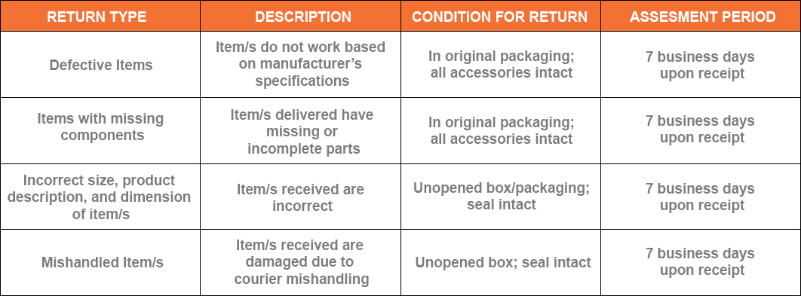
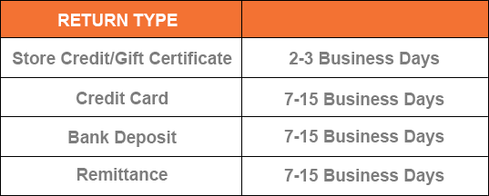
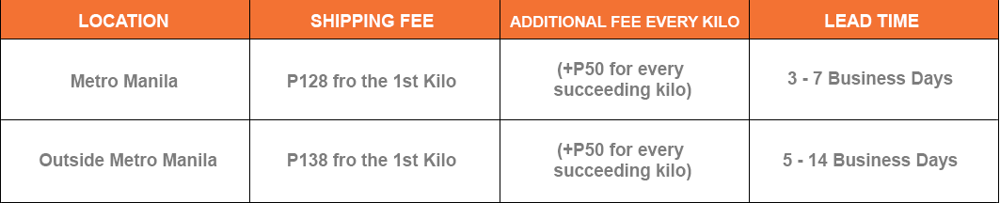
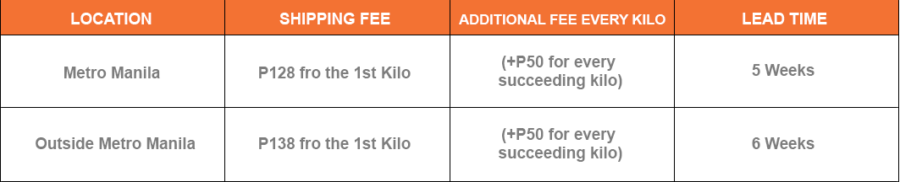
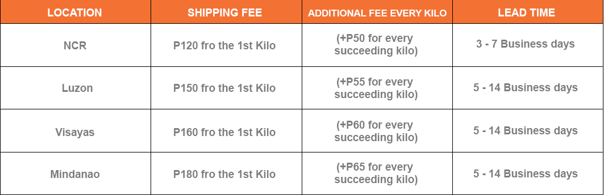
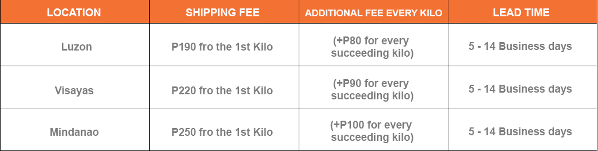
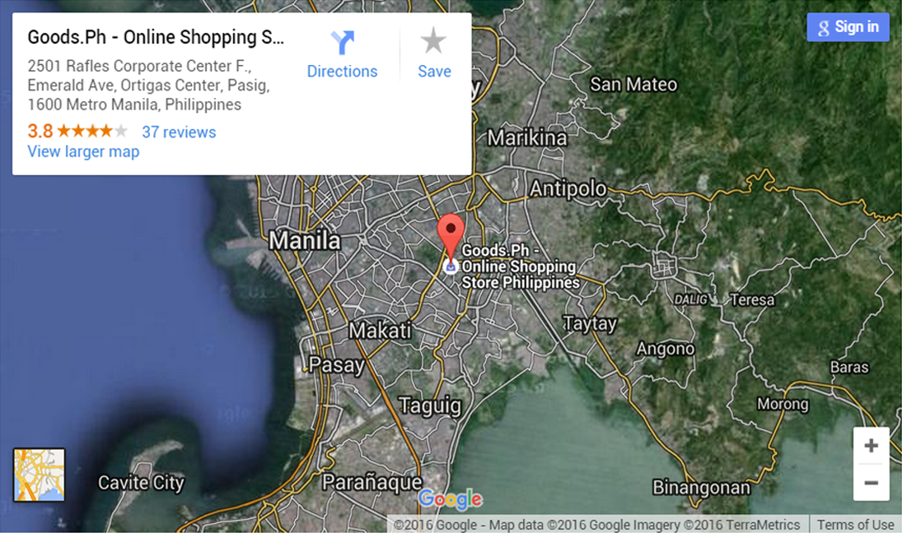

Goods.ph is one of the best online shopping store here in the Philippines. The fastest-growing online shopping mall which aims to innovate the way people shop. For over threes years in the e-commerce industry, our services have grown leaps and bounds through the different multi-platform strategies which mainly composed of cohesive supply chain management and integrated marketing communication. It offers great selections of products which include grocery items. Goods.ph was featured as one of the top 5 online shopping store on Tech-ph.com.
Our delivery scope reaches Metro Manila, Luzon, Visayas, and Mindanao. The country-wide approach is aimed at providing customers a variety of goods on the internet. Goods are categorized into: Mobiles and Tablets, Groceries, Fashion, Health and Beauty, Consumer Electronics, Appliances, Home and Living, Movies, Books and Music, and a lot more.
Our goal is to build a highly efficient online brand that is geared towards the total satisfaction of our customer base by adapting and adjusting to the ever changing needs of our valued clientele. Along with our desire for innovation and excellence in E-Commerce, we offer our valued customers a fast, easy and safe way of paying through our various payment methods together with our accredited bank partners through Bank Transfers to the Bank of the Philippine Islands (BPI), Banco De Oro (BDO) and Unionbank, G-Cash, Smart Money and Credit and Debit Card Payment, Paycash, Cash on Delivery. If you’re within Manila area, we will deliver your items for FREE if your single purchase is more than Php 999. We assure prompt delivery of items anywhere in the Philippines through our trusted courier service. Delivery time frame: Metro Manila Area: 3 to 7 Business Days, Outside Metro Manila Area: 4 to 10 Business Days, Visayas & Mindanao Area: 5 to 14 Business Days. Goods.ph makes sure your orders are delivered to you the way you prefer them to be. Thus, we offer a quick and easy way of redemption. Want to see us? You’re welcome to drop by our office. We're open from Mondays to Saturdays.
Goods.ph commits to its promise of providing convenient, affordable prices and secured online shopping.
Privacy Policy Goods.Ph will use your name and other information, ONLY when it is relevant to mutual dealings between the parties, like personal information of the payer as provided below.
Scope of Privacy Policy
1.Your personal information will be used only when you purchase item(s) and/or seek services.
2.Certain types of information will be accepted and stored upon your interaction with our website.Goods.Ph automatically receives and registers your browser’s information to our server logs.
3.Upon signing up, you will receive an email that contains your personal information for further verification.
Order Policy While Goods.Ph offers a variety of items on the website, availability of items is not completely guaranteed. Thus, upon placing the order, we will get back to you for an availability confirmation. Once confirmed, you may pay the bill using your choice of payment within 24 hours. A draft invoice with your shipping information will be sent to you. You will receive the item(s) you have ordered in 2 days to 1 week depending upon your location.
Payment Confirming your order means that you have agreed to pay the product's price including applicable delivery fees. You credit card or any other form of card shall be billed as part of the order process.
Price Change All prices indicated at Goods.Ph are subject to change without prior notice. In case a product is priced or quoted incorrectly due to misinformation either by typographical error or error of judgment by supplier or distributors, Goods.Ph has the right to cancel orders whether or not the order has been confirmed and the credit card has been charged. In the latter case, the amount spent will be processed for refund in 5 to 7 business days.
Faulty Products Quality control ensures that all orders are in excellent conditions upon dispatch. If, for any reason, a particular item received has a defect, do call right away the attention of Goods.Ph’s Customer Service. They would be glad to assist you the best they can. In case of valid return, such item will be replaced with the same brand and specifications. However, returns should only be made within 7 days upon receipt of the item sold. Otherwise, the right to replacement shall be deemed waived and forfeited.
Promotion Goods.ph’s shopping experience has plenty of promos. Nonetheless, separate set of rules regulate them. Thus, familiarize them before making arrangements.
I.Return Policy
When you want to return an order, you have seven (7) business days upon receipt of the item(s) to initiate the return to the nearest branches of our third-party courier service. Table 1 below provides the specific guidelines. You have to submit a Return Form to request for Return and/or Refund.
It is to be noted that the return due to damaged packaging, wrong shipment, or mishandled items, shall be in a manner that the subject item(s) are in a good condition – NEITHER WORN NOR DAMAGED, with its ORIGINAL, UNOPENED MANUFACTURER’S PACKAGING. The ORIGINAL INVOICE and the RETURN FORM must be included in the parcel. Once the returned items passed the Goods.ph’s Quality Control, the return will be processed. Otherwise, you will be notified right away.
Once the Goods.ph’s Quality Control approves the validity of the item(s) subject of the return, they will be processed within 5 business days. If the return is held invalid, the customer will be notified right away and the item(s) will be sent back to him/her.
You may return your item/s to the address below:
Return Address
Unit 2501 Raffles Corporate Center
Emerald Ave., Ortigas Center
Pasig City, Philippines 1600
Table 1: Return Types and Conditions
For the return to be valid, the item(s) must comply with the Return Policy as tabulated below:

II.Condition of Return Based on Product Category
Groceries
Perishable items cannot be returned. If you received a damaged Grocery item, please email our Customer Service team with the ff:
· Photo/s of the damaged item/s
· Order Number
· Date of Arrival
· Detailed explanation of the issue
Mobiles & Tables
Mobiles & Tablets must be returned UNUSED, UNOPENED, and UNMARKED seven (7) business days upon receipt.
Fashion
Fashion items must be returned UNUSED, UNOPENED, and UNMARKED seven (7) business days upon receipt. Goods.ph allows exchange (to another size or style) provided that the return is made within 7 business days upon receipt of the good(s) except for the following items:
· Underwear
· Brassiere
· Caps
· Belts
· White Garments
· Swim wear
· Earrings
· Watches
· Eye Wear
· Perfumes
III.Refund Policy
Once the Return and Refund requests are approved, we will process the refund based on your preferred mode of refund. Refunds via Credit Card, Bank Deposit, and Remittance may take 7-15 business days, while refund via Store Credit/Gift Certificate may take 2-3 business days.

Do have a return request? Fill out the Return Form here.
1. Definitions
1.1 In these Terms, unless the context requires otherwise:
“Buyer” means the person who buys or agrees to buy the Goods from the Seller.
“Contract” means any contract for the sale of Goods by the Seller to the Buyer made after the Buyer first receives a copy of these Terms from the Seller.
“Goods” means the goods which the Buyer agrees to buy from the Seller.
“Price” means the price for the Goods excluding sales tax and any other additional charges(such as delivery charges) notified to the Buyer when placing the order.
“Seller” means Goods.ph/Ehao Online Trading Corporation a duly registered company in the Philippines (SEC number CS201216297).
2. Basis of Purchase
2.1 These Terms apply to all Contracts to the exclusion of all other terms and conditions.
2.2 All orders for Goods shall be deemed to be an offer by the Buyer to purchase Goods on these Terms.
2.3 Payment by the Buyer for the Goods or acceptance of delivery of the Goods (whichever is earlier) shall be deemed conclusive evidence of the Buyer’s acceptance of these Terms.
2.4 Save as expressly otherwise provided herein, no variation to these Terms shall be effective
unless the Seller has agreed it in writing.
3. Price, Payment & Order Acceptance
3.1 There are cases when an order cannot be processed for various reasons. The Seller
reserves the right to refuse or cancel any order for any reason at any given time.
3.2 The Buyer may be asked to provide additional verification or information, including but not limited to phone number and address, before the Seller accept the order.
3.3 The Seller is determined to provide the most accurate pricing information on the Site to our the Buyers, however, errors may still occur, such as cases when the price of a Goods is not displayed correctly on the website.
3.4 As such, The Seller reserves the right to refuse or cancel any order. In the event that the Goods is mispriced, seller may, at their own discretion, either contact the buyer for
instructions or cancel of order and notify the buyer of such cancellation.
3.5 The Seller shall have the right to refuse or cancel any such orders whether or not the order has been confirmed and your credit card charged.
4. The Goods
The quantity and description of the Goods shall be as set out in the Seller’s website, quotation or acknowledgement of order (which may be written or verbal).
5. Warranties & Liability
5.1 The Seller warrants that, at the time of delivery, the Goods. will correspond to the description given by the Seller; and
will be of satisfactory quality within the meaning of the Sale of Goods and except where the Buyer is dealing as a consumer, all other warranties, conditions or terms relating to fitness for purpose, quality or condition of the Goods, whether express or implied by statute or common law or otherwise are excluded to the fullest extent permitted by law.
5.2 The Seller shall not be liable to the Buyer for any loss of profits; loss of business or any indirect or consequential loss howsoever caused which arise out of or in relation to any Contract.
5.3 Nothing in these Terms excludes or limits the liability of the Seller for death or personal injury caused by its negligence or for any other matter for which it would be illegal for the Seller to attempt to exclude its liability.
6. Delivery of the Goods
6.1 Delivery of the Goods shall be made by the Seller to the Buyer’s principal place of business or such other place of delivery as is agreed with the Buyer in writing.
6.2 Any dates quoted for delivery of the Goods are approximate only and time of delivery shall not be of the essence unless previously agreed by the Seller in writing. The Goods may be delivered by the Seller in advance of any quoted delivery date subject to giving reasonable notice to the Buyer.
6.3 The Buyer shall make all arrangements to take delivery of the Goods whenever they are tendered for delivery.
7. Acceptance of the Goods
7.1 The Buyer shall be deemed to have accepted the Goods 24 hours after delivery.
7.2 After acceptance the Buyer shall not be entitled to reject the Goods for any reason.
7.3 Any claim by the Buyer, which is based on any defect in the quality or condition of the Goods or their failure to correspond with description, shall be notified to the Seller within 24 hours of delivery.
7.4 Where a valid claim in respect of any of the Goods is made in accordance with paragraph 7.3, the Seller may replace the Goods (or the part in question) free of charge, or at the Seller’s sole discretion, refund to the Buyer the price of the Goods (or a proportionate part of the price), in which case the Seller shall have no further liability to the Buyer.
7.5 Sale Items confirmed by our Customer Service Representatives as purchased but is replaced at the last minute will have additional freight/delivery charges.
8. Returns & Refunds
8.1 The Seller allows exchange (to another size or style) provided that the return is made within 7 business days upon receipt of the good(s).
8.2 The return is based on the presumption that the item(s) are in good condition – neither worn nor damaged, with its original tag and packaging intact.
8.3 The original invoice must be included in the parcel. Shipping charges for sending the item(s) back to Goods.ph shall be borne by the customer.
8.4 Once the Seller’s Quality Control approves the validity of the item(s) subject of the exchange, said exchange will be processed within 5 business days. If the exchange is held invalid, the customer will be notified right away and the item(s) will be sent back to him/her.
9. Title & Risk
Title to the Goods shall pass to the Buyer upon the later of payment of the Price and delivery of the Goods. Risk in the Goods shall pass to the Buyer once the Goods leave the Seller's premise.
10.Insolvency of Buyer
In the event that the Buyer goes into any form of insolvency, or ceases or threatens to cease, carrying on business or the Seller reasonably apprehends that any of the foregoing events is about to occur and notifies the Buyer accordingly, then the Seller may cancel any Contract, or suspend any further deliveries under any Contract without any liability to the Buyer, and if the Goods have been delivered but not paid for, the Price shall become immediately due and payable notwithstanding any previous agreement or arrangement to the contrary.
11.Returns & Refunds
11.1 The Seller shall not be liable to the Buyer or be deemed to be in breach of Contract by reason of any delay in performing, or any failure to perform any of its obligations if the delay or failure was due to any cause beyond the Seller’s reasonable control, including (without limiting the foregoing) Acts of God; war; changes of law or restrictions imposed by government authority; strikes (whether involving the Seller’s employees or those of third parties) or supply chain failure.
11.2 The Buyer shall not be entitled to assign any Contract or any part thereof without the prior written consent of the Seller.
11.3 Any notice required or permitted to be given by either party to the other under these Terms shall be in writing addressed to the other party at its registered office or principal place of business.
11.4 No waiver by the Seller of any breach of a Contract by the Buyer shall be considered as a waiver of any subsequent breach of the same or any other provision.
11.5 In the event that any inconsistencies exist between these Terms and any future published Terms or understanding, the last published Terms shall take precedence.
11.6 If any provision of these Terms is held by any court or other competent authority to be invalid or unenforceable in whole or in part the validity of the other provisions of these Terms shall not be affected.
11.7 Each Contract shall be governed by the Philippine law and the parties submit to the exclusive jurisdiction of the Philippine courts.
Shipment & Delivery
Your time is important and we don't want to keep you waiting! To serve you as best as we can, Goods.ph has its own courier service to make sure you get your orders immediately.
Pick Up (for MANILA customers ONLY)
You may now pick up your orders from our office. Our pick up location is at Unit 2501 Raffles Corporate Center, Emerald Ave., Ortigas Center, Pasig City. Please bring 2 VALID IDs when picking up your order. Kindly schedule your preferred pick up date and time through our Customer Service. You may call 570-9858 or email us at inquiry@goods.ph.
Delivery via COD (Cash on Delivery)
We deliver your orders right at your doorsteps! Our Cash on Delivery option is available nationwide.
Quick Guide
· Once an order is confirmed, our customer service representative will contact you to confirm the delivery date of your purchase.
· Your orders will be delivered by our logistics partner to the address you have provided in the Goods.ph billing page.
· We offer FREE shipping within Metro Manila Area for orders P999 and above (except for Groceries, Appliances and large equipment, Daily Sale, and Goods Tiangge).
· Orders below P999 will have a minimum delivery charge.

For Goods Tiangge Items Only

For Groceries Only

For Groceries Only

Find Us Our Main Office is located at 2501 Raffles Corporate Center, Emerald Avenue, Ortigas Center 1600 Manila, Philippines.
Customer Service: 8:00 AM until 9:00 PM on Mondays to Saturdays and until 7:00 PM during Sundays.
Contact Us Phone:(02)570-9858 Mobile Phone:63917-8203307 E-mail Address:inquiry@goods.ph Official Website:https://www.goods.ph
